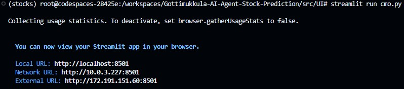
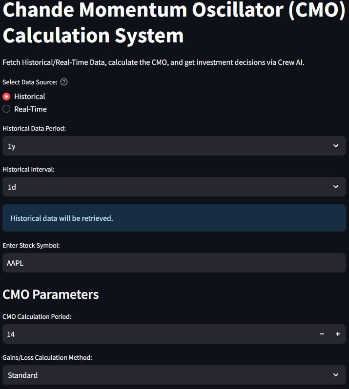
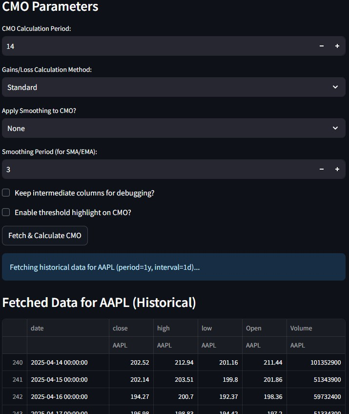
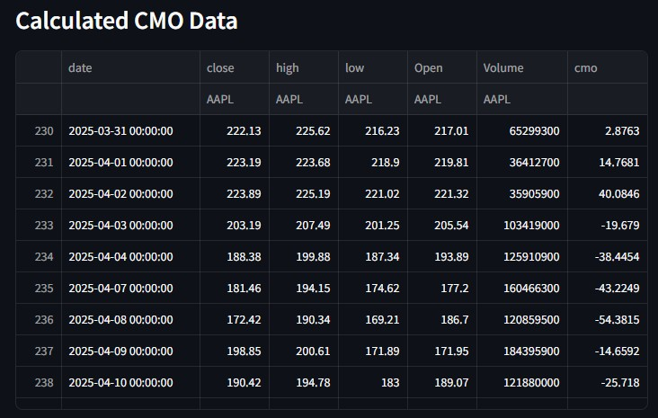
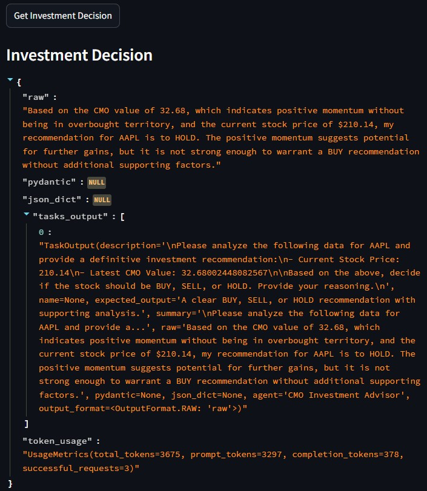
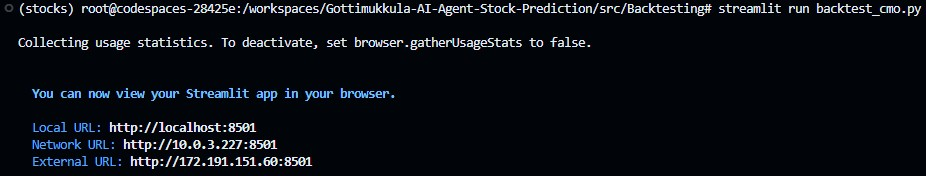
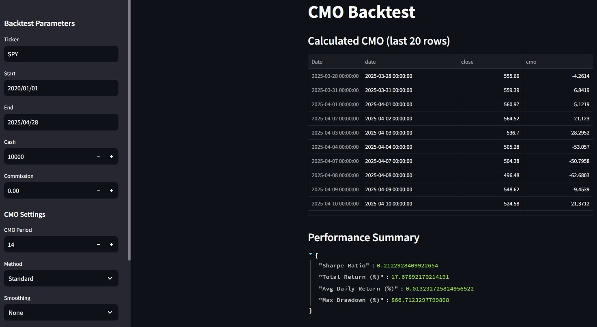
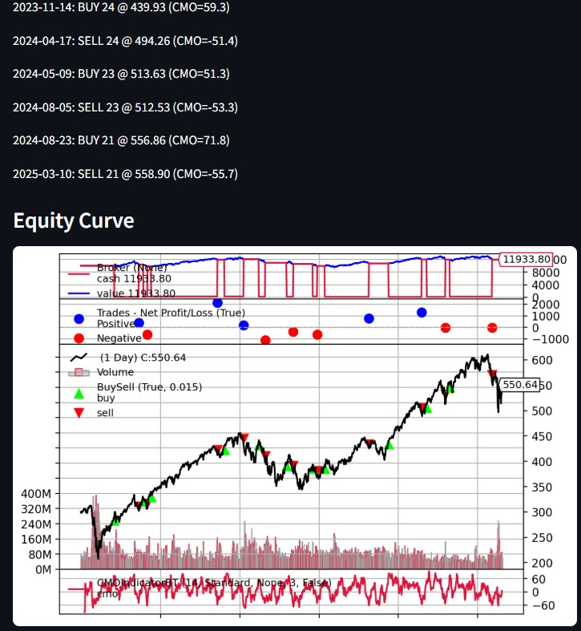

I built an AI-driven Stock Prediction system centered on the Chande Momentum Oscillator (CMO). My contributions spanned developing the CMO calculation engine, integrating real-time and historical data fetchers, embedding CrewAI agents for BUY/SELL/HOLD recommendations, authoring unit/integration tests, and constructing a robust backtesting framework.
This end-to-end Streamlit app uses Python, yfinance, and CrewAI (with a ChatOpenAI backend) to deliver momentum-based trading recommendations. Data ingestion modules fetch stock prices, the CMOCalculator computes momentum, CrewAI agents analyze results using browser, calculator, and SEC tools, and a backtesting suite validates strategy performance.
| Sprint | Objective |
|---|---|
| Sprint 1 | Minimal Viable Product: basic CMO calculation & data fetching |
| Sprint 2 | UI customization & real-time/historical data integration |
| Sprint 3 | Unit/integration tests and performance & scalability validation |
| Sprint 4 | Integration testing and end-to-end backtesting framework |
Explore the complete codebase on GitHub:
View RepositoryKey screenshots:








| Date | Commit | Description | Task |
|---|---|---|---|
| 02/03/2025 | d89564d059fbe94ac71e75aae28aacaa5aa6b042 | Add CMO code for fetching stock data and calculating the values | CMO.1 |
| 02/08/2025 | 2296b7194d0ae7414ad80e662d34bf6f782226ee | Customization features for CMO Indicator | CMO.6 |
| 02/15/2025 | 1c466e3cfbbed4199918bfc5b76ad2138fbbc7e3 | CMO real-time data using yfinance | CMO.6 |
| 03/17/2025 | 3c407c4c34a92725d8277d9cf411c42e15587af0 | Updated CMO code with Crew AI agents | CMO.8 |
| 04/01/2025 | cfeed0704005f39d03bc20eb74d9e6b29f3432b9 | CMO testing code | CMO.10 |
| 04/22/2025 | fc22b9a8e2e2df6f91152aaac1ce5f09023f571a | CMO indicator backtesting with Crew AI agent | CMO.11 |
| 04/27/2025 | 870564d6f25dfbf3f02992412b3e799d80941588 | Updated backtest code for CMO | CMO.11 |